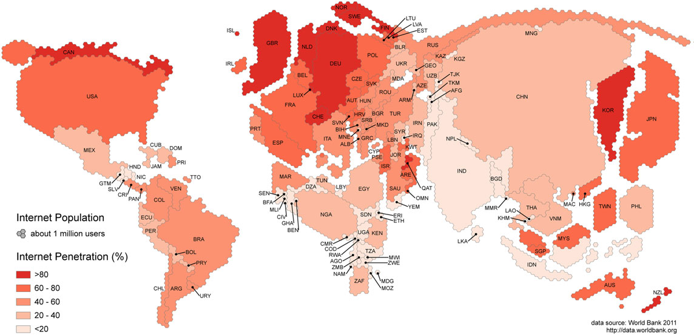

Towards a study of information geographies: (im)mutable augmentations and a mapping of the geographies of information.
11 September 2020
Graham et al (2015) argues that information has always had geography. It is from somewhere about somewhere. Graham et al (2015) point out that the information is mediated by networks, technologies existing in physical, material places. The authors point out that these geographies of information about places matter because they shape how we can find and understand different parts of the world. In this paper, the research results showed that not only are there geographies of uneven access to contemporary modes of communication however there are also uneven geographies of participation production of information-knowledge and further lack of representation in information. To demonstrate the uneven geographies of participation, the authors analysed 3 different variables which included domain names, GitHub users, Wikipedia edits. They discoveed that there is unevenness. Considering the internet population, access to the internet, participation, innovation, distribution, they deduced that majority of the western society control the internet. Places invisible or discounted in representation are invisible in practice to many people".(Graham et al 2015: 1) Graham et al (2015) suggests that geographic augmentations are way more than a representation of places they are a part of it, they shape it rather than they are opposed to reflecting it. The authors aimed to explore how information geographies have their geographic distributions: geographies of access, of participation and representation. The authors offer a range of key platforms that mediate, host and delivers different types of geographies. The paper also demonstrates that in addition to the geographies of uneven access to contemporary modes of communication uneven geographies of participation and representation show asimilar pattern of unevenness. The authors suggest that information geographies are being perpetuated rather than being alleviated or challenged. The authors identify that these unchangeable augmentations of information about places are of importance because as these augmentations shape how we can find and understand the world. How these places are represented being invisible within informational augmentation changes how they are used (Graham et al 2015: 89). The authors suggest that the geography of information has been a key to the means of control and power formation.
As the research is a starting point. This research looks at how the information geographies have geographic distributions, geographies of access, of participation and representation. The authors point out that the information is produced under the banner of power (Graham et al 2015: 90). Books and the media in general, have been produced from the global North and these are consumed by the global South, the global South contributing a small role in producing, creating. Castells identifies that Africa as a whole is left out of technology innovation and creation. The authors argue that power over information is expressed into different spatial patterns, all of the traditional mediums of information are characterised by significant inequalities. In reference to Castell, they point out that systemic uneven relationship between information production/use, socio-economic exclusion and marginalisation are the black holes of informational capitalism (Graham et al 2015: 91). The authors suggest that there has been a change possibly a revolution of availability of information. We have seen some radical changes, the different ways in which information is produced and used. We are now in this age of post-information scarcity. The authors point out these changes is the result of new socio-technical systems of the information age. This is also because of the much larger accessibility to computers. The authors set out to answer/research with the increase of connectivity, devices have also increased. The authors question if the increase of access changed participation or representation but also how has the increase in connectivity changed the political economy of information on how this has changed the technical systems identified by scholars. Further if because of more people create and access information, if there are different geographies of participation and representation/new layers of digital augmentations.
The research focuses on 3 categories. Geographies of access and enablement. With geographies of access and enablement, they identified who has access and enablement. This allowed for gaining insight and understanding of the distribution of technologies and services. With the digital engagement mapped, it points to internet users and total populations datasets from the World Bank, internet connections which have backed internet users and internet connections per country showed that China does have the largest internet population. Countries like India and Japan also behind China as they also have a huge number of internet users however they have less penetration compared to Europe, North America.
Image illustrating the number of internet users in comparison to the peneration
The authors further look at the uneven pattern in the geography of internet access and they suggest that this is different across different places. With Global North, the cost is relatively low whilst Africa; the average cost is quite high, the cost range from 10% to 250% of the average income of the individuals (Graham et al 2015:92). This is because of how the internet cables are placed. Further this also affects where the cell towers are placed as well which means that certain places in South Africa- you would find less cell towers in comaprison to the cell towers in more established places. South Africa is one of the countries that has the highest data prices. According to the research company tariff which compared the prices that South Africans pay for data-only packages which were compared to Brazil, Russia, India and China. Also compared to South Africa’s data-only pricing to the African countries like Kenya with the emerging market and developed market of Australia (Van Zyl 2016). The comparison was against the average data contract prices across the use of local mobile network operators with the results demonstrating that SA has the second highest data contract prices in the group. Data prices for South Africa were on average 134% more expensive that the cheapest prices in the group so 1GB would be R77 in South Africa whereas in Brazil it would be R210, Russia it would be R32 and India the data costs would be R53. This was the data cost measured in 2016 (Van Zyl 2016).

Image illustrating the average cost of internet access
In the research's exploration of participation, the authors looked at 3 different variables domain web which allowed the authors to indicate content produced on the web. GitHub was used to measure contribution and Wikipedia. The research result showed that the 78% of domains are registered in Europe and North America with Asia only having 13% of the world domains, Latin America which is 5% and Oceania which is 13% and with the middle east and Africa only making up 2% combined of the world domains. The authors deduce that the large number of internet users do not mean or entail that there is a large amount of domain registration with regards to China (Graham et al 2015:95).

Image example of the contribution of github edits

Image example of the interent population
This concludes that there is a big difference between access to information and participation in this creation. When looking at the GitHub quantitative results, this also showed a similar uneven pattern in terms of contributions on GitHub. It is not only with domain names of websites but software. North America and Europe contribute more than any other region in the world (Graham et al 2015:96). In terms of Wikipedia contributions also shows unevenness. The authors have recorded that there are inequalities as edits/contribution are from a user located in the US in comparison to Africa; there are only a few edits that demonstrated to be from Africa and the Middle East. When analysing the geographies of representation the authors point out that they needed to understand the representation within the immutable augmentation of the world. Hence they analysed the geographies of series of different digital representations: Google search, Open Streetmap, semantic web, Geonames. The research result shows that there are patterns of unevenness with different platforms that allow for the representation of places. The authors point out that how can the geographies of information be more inclusive and less uneven. it is about decolonising but also it is about focusing more attentively about how this can impact or have an effect on post-colonial modes of information governance. The research while it does not detail the causes; the question of why there are these disproportional, uneven geographies, the authors point to decolonising, disentangling the mutability, immutability of information mapping and critically questioning the power of what is made visible versus invisible. In analysing the geographies of representation. Graham et al(2015) looked at the different digital representations like Google search, OpenStreetMap to offer ways in which there are spatial differences in digital representation Graham et al suggest that google searches indicate based on the geographic content if it decides to contain can have an impact on how places are represented. In analysing the google searches, Graham et al point out that google indexes a large number of pages even though they are about small communities. But based on google searches the USA, China, Japan and the United Kingdom record the highest mentions in Google index. Graham et al suggest that the relationship between mentions of countries plus internet users compared to the population; Google searches reflect the unevenness in the formation the inequalities that make up the web. This is the same pattern when analysing the OpenStreetMap which is one of the largest roadmaps, the results showed that USA, Russia, France, Canada and Germany made up more than half, 58% of the content on OpenStreetMap. While Africa, South America each only make up less than 5% of the worlds' content on OSM. To put this into perspective a city in the US accounts for almost as much content as the entire African continent.
Image illustrating the number of nodes in OSM per Km
Similar to Freebase and Geonames, there is an underrepresentation of countries like Nigeria whereby they only account for less than 0.1% but keeping in mind that they make 2.5% of the population. Analysing the Geonames on the other hand, it showed that they do not reflect the distribution. The United States accounted for 25% of the data sets meaning that there is a lot of information/content about the US and in comparison, to Asia which has 23% of place names but having the most internet users/population
Image illustrating the placenames per square kilometres in Geonames
Image illustrating the number of georeferenced objects in Freebase per km
Image illustrating the difference between population verus the internet users and geographies of representation variables
But also, there have been imbalances in terms of the analyses of the Freebase content and exceptions like, Haiti which saw more place names due to the earthquake that occurred in 2010. However, considering the results presented by the authors suggest that this representation affects how we understand, interact, use digital information. This is demonstrated when searching an African country like Zimbabwe, Kenya or South Africa on google, the search results show a very particular representation of the country-negative representation. I think the study offered a lot of questions to think about, whilst this study was conducted in 2013, a lot has changed it would be interesting to see how these patterns have shifted considering that Africa has increased in terms of its internet users and mobile and smartphone users but also YouTube being a producing and viweing content platform has possibly changed the geographies of representation.